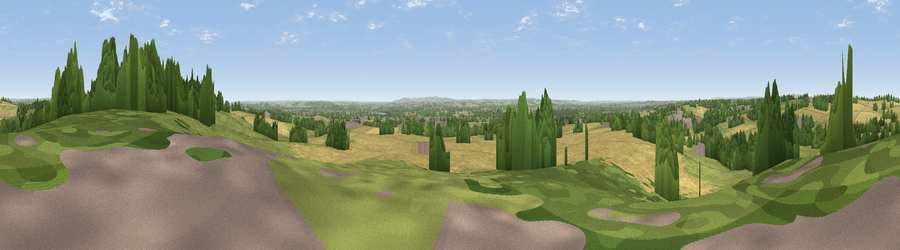

Viewpoint near Ockbrook
#25453 in England · top 32% of its area beats it · near Ockbrook · path 72 mWhere it is
The exact computed spot (SK 43975 36275). Click the marker for map links.
Public access: the nearest public right of way is about 72 m away — the final stretch may cross private land. Computed from Natural England's CRoW access layer and OpenStreetMap rights of way — not the legal definitive map. Always verify locally.
The view, rendered

A 360° render of this exact spot computed from the terrain model, tree cover and land cover — summer colours, afternoon light, calibrated against photographs of famous viewpoints. Real trees, hedges and buildings will differ in detail.
The panorama
Grey silhouette: terrain skyline in each direction (720 bearings, Earth curvature and refraction included). Dashed green: skyline with trees (+15 m) and buildings (+8 m) as obstacles. Blue strip: how far the ground is visible on each bearing.
Where the view opens
Wedge length = distance to the farthest visible ground on that bearing (vegetation-aware). Rings at 10, 25 and 50 km.
What fills the view
45% cropland · 32% grassland · 17% woodland · 6% built-up
Angular shares of the visible panorama (visual magnitude), not map area. Landscape diversity 0.52 (0–1 Shannon).
Key numbers
More beautiful places nearby
The staircase of upgrades: each row has a higher view potential than everything closer. Driving times are estimates from straight-line distance, calibrated against real road routing — check an actual route before setting out.
| Place | Direction | Drive | Score |
|---|---|---|---|
| Viewpoint near Risley | ENE · 2 km | ~4 min | 57.7 |
| No Man's Lane | ENE · 2 km | ~6 min | 65.8 |
| Viewpoint near Whitwick | S · 19 km | ~33 min | 71.2 |
| Ives Head | S · 20 km | ~33 min | 73.3 |
| Alport Height | NW · 20 km | ~34 min | 73.9 |
| Viewpoint near Woodhouse Eaves | SSE · 23 km | ~37 min | 77.7 |
| Viewpoint near Mow Cop | WNW · 62 km | ~84 min | 78.9 |
| Viewpoint near Mow Cop | WNW · 62 km | ~84 min | 80.2 |
52.92210, -1.34737 · source: screening · position refined by local search. Computed location — check access rights before visiting.